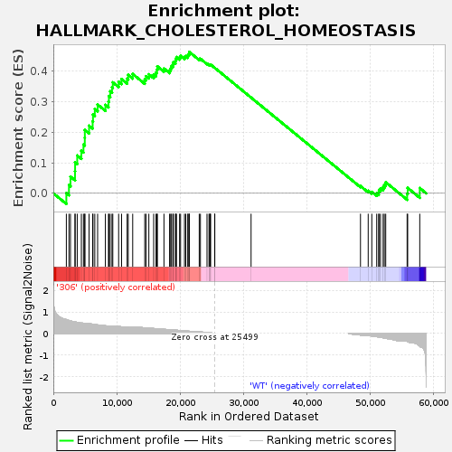

| | | Dataset | 306_WT_express.306_WT.cls#306_versus_WT |
| Phenotype | 306_WT.cls#306_versus_WT |
| Upregulated in class | 306 |
| GeneSet | HALLMARK_CHOLESTEROL_HOMEOSTASIS |
| Enrichment Score (ES) | 0.46345147 |
| Normalized Enrichment Score (NES) | 1.2193011 |
| Nominal p-value | 0.117256634 |
| FDR q-value | 0.48508278 |
| FWER p-Value | 0.98 |
Table: GSEA Results Summary

Fig 1: Enrichment plot: HALLMARK_CHOLESTEROL_HOMEOSTASIS
Profile of the Running ES Score & Positions of GeneSet Members on the Rank Ordered List
| SYMBOL | TITLE | RANK IN GENE LIST | RANK METRIC SCORE | RUNNING ES | CORE ENRICHMENT | | 1 | TP53INP1 | NNN | 2053 | 0.643 | 0.0005 | Yes |
| 2 | SC5D | NNN | 2464 | 0.603 | 0.0268 | Yes |
| 3 | ALCAM | NNN | 2705 | 0.580 | 0.0546 | Yes |
| 4 | STARD4 | NNN | 3421 | 0.536 | 0.0720 | Yes |
| 5 | FBXO6 | NNN | 3435 | 0.534 | 0.1013 | Yes |
| 6 | DHCR7 | NNN | 3769 | 0.512 | 0.1238 | Yes |
| 7 | LPL | NNN | 4424 | 0.482 | 0.1393 | Yes |
| 8 | HMGCS1 | NNN | 4754 | 0.474 | 0.1598 | Yes |
| 9 | ABCA2 | NNN | 4964 | 0.469 | 0.1821 | Yes |
| 10 | PDK3 | NNN | 4972 | 0.468 | 0.2078 | Yes |
| 11 | HMGCR | NNN | 5639 | 0.457 | 0.2216 | Yes |
| 12 | PLSCR1 | NNN | 6205 | 0.430 | 0.2357 | Yes |
| 13 | CTNNB1 | NNN | 6257 | 0.428 | 0.2584 | Yes |
| 14 | SCD | NNN | 6542 | 0.416 | 0.2765 | Yes |
| 15 | MVK | NNN | 6988 | 0.397 | 0.2908 | Yes |
| 16 | ATXN2 | NNN | 8211 | 0.358 | 0.2898 | Yes |
| 17 | ALDOC | NNN | 8703 | 0.349 | 0.3007 | Yes |
| 18 | ERRFI1 | NNN | 8768 | 0.348 | 0.3187 | Yes |
| 19 | FADS2 | NNN | 8971 | 0.341 | 0.3341 | Yes |
| 20 | CBS | NNN | 9258 | 0.332 | 0.3476 | Yes |
| 21 | LDLR | NNN | 9384 | 0.328 | 0.3635 | Yes |
| 22 | ACSS2 | NNN | 10304 | 0.320 | 0.3655 | Yes |
| 23 | SREBF2 | NNN | 10768 | 0.309 | 0.3747 | Yes |
| 24 | TMEM97 | NNN | 11645 | 0.285 | 0.3754 | Yes |
| 25 | IDI1 | NNN | 11820 | 0.280 | 0.3879 | Yes |
| 26 | ADH4 | NNN | 12524 | 0.274 | 0.3910 | Yes |
| 27 | LSS | NNN | 14425 | 0.263 | 0.3732 | Yes |
| 28 | SQLE | NNN | 14633 | 0.257 | 0.3838 | Yes |
| 29 | TM7SF2 | NNN | 15072 | 0.247 | 0.3900 | Yes |
| 30 | STX5 | NNN | 15833 | 0.231 | 0.3898 | Yes |
| 31 | NFIL3 | NNN | 16205 | 0.221 | 0.3957 | Yes |
| 32 | GUSB | NNN | 16350 | 0.218 | 0.4053 | Yes |
| 33 | PCYT2 | NNN | 16417 | 0.216 | 0.4161 | Yes |
| 34 | CXCL16 | NNN | 17457 | 0.191 | 0.4089 | Yes |
| 35 | CYP51A1 | NNN | 18344 | 0.175 | 0.4035 | Yes |
| 36 | CD9 | NNN | 18517 | 0.170 | 0.4099 | Yes |
| 37 | LGALS3 | NNN | 18645 | 0.167 | 0.4170 | Yes |
| 38 | CHKA | NNN | 18872 | 0.162 | 0.4221 | Yes |
| 39 | ACAT2 | NNN | 18952 | 0.160 | 0.4296 | Yes |
| 40 | GLDC | NNN | 19273 | 0.153 | 0.4326 | Yes |
| 41 | LGMN | NNN | 19330 | 0.152 | 0.4400 | Yes |
| 42 | FASN | NNN | 19431 | 0.150 | 0.4465 | Yes |
| 43 | TRIB3 | NNN | 19925 | 0.139 | 0.4458 | Yes |
| 44 | PNRC1 | NNN | 20079 | 0.135 | 0.4507 | Yes |
| 45 | GPX8 | NNN | 20695 | 0.120 | 0.4468 | Yes |
| 46 | GSTM2 | NNN | 20901 | 0.115 | 0.4497 | Yes |
| 47 | ANXA13 | NNN | 21224 | 0.108 | 0.4501 | Yes |
| 48 | HSD17B7 | NNN | 21269 | 0.107 | 0.4553 | Yes |
| 49 | FDPS | NNN | 21448 | 0.102 | 0.4579 | Yes |
| 50 | FDFT1 | NNN | 21451 | 0.102 | 0.4635 | Yes |
| 51 | ACTG1 | NNN | 23023 | 0.069 | 0.4405 | No |
| 52 | NSDHL | NNN | 23212 | 0.064 | 0.4409 | No |
| 53 | FABP5 | NNN | 24250 | 0.040 | 0.4254 | No |
| 54 | ATF5 | NNN | 24560 | 0.033 | 0.4220 | No |
| 55 | ECH1 | NNN | 24676 | 0.029 | 0.4216 | No |
| 56 | CPEB2 | NNN | 24752 | 0.027 | 0.4219 | No |
| 57 | ETHE1 | NNN | 24824 | 0.026 | 0.4221 | No |
| 58 | JAG1 | NNN | 25467 | 0.002 | 0.4112 | No |
| 59 | MVD | NNN | 25479 | 0.001 | 0.4111 | No |
| 60 | AVPR1A | NNN | 31204 | 0.000 | 0.3137 | No |
| 61 | EBP | NNN | 48470 | -0.071 | 0.0238 | No |
| 62 | GNAI1 | NNN | 49687 | -0.092 | 0.0081 | No |
| 63 | TNFRSF12A | NNN | 50256 | -0.112 | 0.0046 | No |
| 64 | S100A11 | NNN | 51029 | -0.145 | -0.0005 | No |
| 65 | PMVK | NNN | 51345 | -0.159 | 0.0029 | No |
| 66 | PPARG | NNN | 51388 | -0.161 | 0.0110 | No |
| 67 | SEMA3B | NNN | 51630 | -0.171 | 0.0164 | No |
| 68 | MAL2 | NNN | 52042 | -0.192 | 0.0199 | No |
| 69 | ANXA5 | NNN | 52226 | -0.204 | 0.0281 | No |
| 70 | CLU | NNN | 52453 | -0.218 | 0.0363 | No |
| 71 | ANTXR2 | NNN | 55828 | -0.359 | -0.0013 | No |
| 72 | PLAUR | NNN | 55918 | -0.370 | 0.0176 | No |
| 73 | ATF3 | NNN | 57824 | -0.579 | 0.0171 | No |
Table: GSEA details [plain text format]
 Fig 2: HALLMARK_CHOLESTEROL_HOMEOSTASIS
Fig 2: HALLMARK_CHOLESTEROL_HOMEOSTASIS
Blue-Pink O' Gram in the Space of the Analyzed GeneSet
Fig 3: HALLMARK_CHOLESTEROL_HOMEOSTASIS: Random ES distribution
Gene set null distribution of ES for HALLMARK_CHOLESTEROL_HOMEOSTASIS